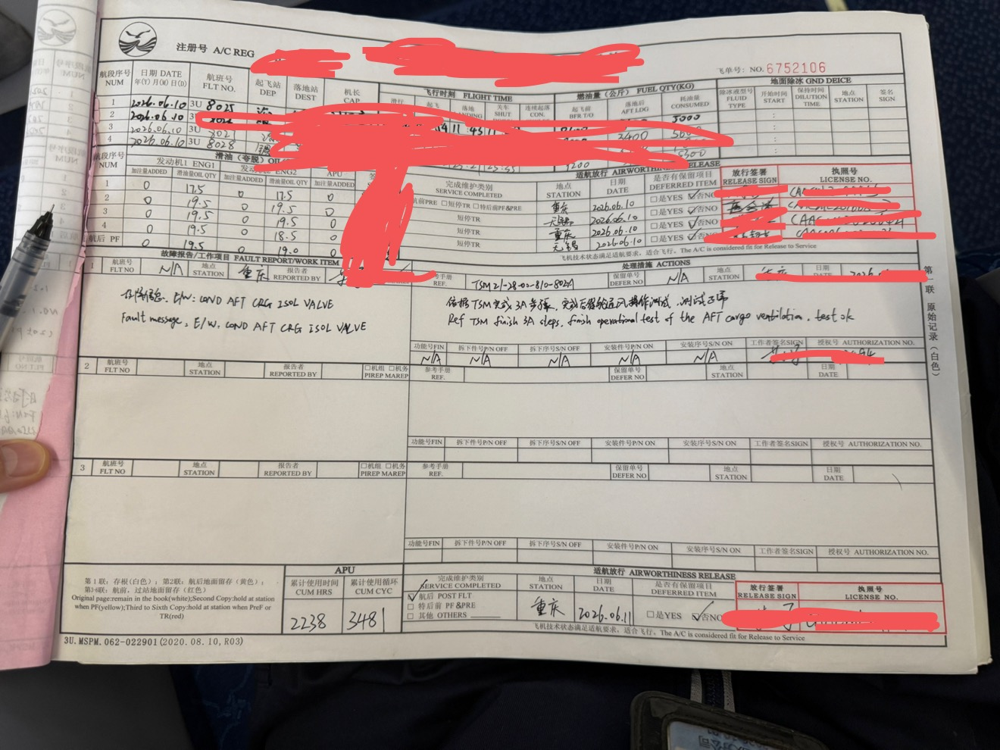
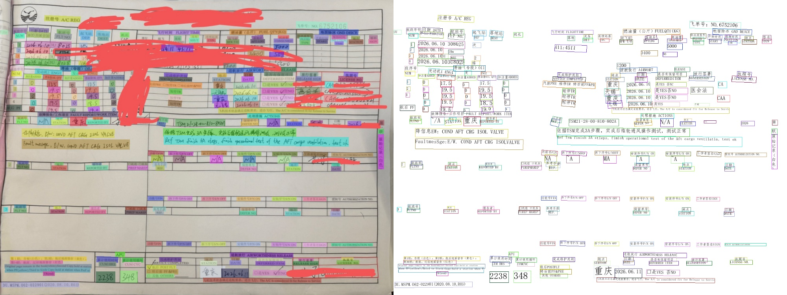
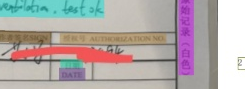

1. 演示目标
老板需要按照带序号的检查指南核查 29 个关键点：页首注册号、滑油栏、故障报告/处理措施、APU 累计时间/循环、适航放行栏。系统不需要完整理解整张表，而是要稳定提取关键字段，并用最短文字指出哪里有问题。
29电子化检查点
252默认示例 OCR blocks
21 / 29默认示例通过字段
2. 核心 Pipeline
上传/示例默认加载缓存示例；上传新图才调用云端。
PP-OCRv6原图输入，使用 PaddleOCR 自带文档矫正。
字段归属根据 fields.yaml 将 OCR block 分配到字段。
LLM CleanerDeepSeek 清洗字段值，不做最终判定。
规则引擎本地 validators 做 pass/fail。
ROI 复核从 PaddleOCR 图和 block 候选裁局部 ROI 再读一次。
重要调整：PP-OCRv6 不再吃我们自己的 warped 图，而是直接读取原始上传图。图像矫正交给 PaddleOCR 的文档预处理，避免二次变形造成文字块错位。默认线上模式不跑本地 SIFT 配准，ROI 证据优先来自 PaddleOCR 输出图与 OCR block 坐标。
3. 模型分工
| 模块 | 当前模型/方法 | 职责边界 |
|---|---|---|
| 整页 OCR | PP-OCRv6 | 文档矫正、文字检测、文字识别、输出 box 和 score。 |
| 字段清洗 | deepseek-ai/DeepSeek-V4-Flash | 从候选文字中选择字段值、归一化日期/编号/英文内容。 |
| ROI 复核 | qwen3.7-plus | 只对关键失败字段的 PaddleOCR 局部小图做二次识别，成功后替换原值。 |
| 最终判定 | 本地规则 | 范围、正则、日期、checkbox、英文判断等，LLM 不直接决定合规。 |
4. 默认演示截图与证据




5. ROI 复核机制
新版规则中，注册号、授权号、执照号、签名和 APU 数字属于高风险字段。系统会基于 PaddleOCR 矫正图和候选 block 裁切局部 ROI；上传实时分析时可交给视觉模型复核，默认缓存示例则直接展示已有 ROI 证据。
| 字段类型 | 规则 | 复核策略 |
|---|---|---|
| 授权号 | ^[0-9]{6}$ | 失败时裁切授权号格子进入 ROI-VLM。 |
| 执照号 | ^CAACML[0-9]{8}$ | 保留证照局部图和 OCR candidates。 |
| APU 累计 | 数值小于 99999 | 数字字段可强制 ROI 复核，避免漏读末位。 |
6. 字段和规则配置
字段定义集中在 fields.yaml，每个字段包含 id、label、section、bbox、recognizer、validator、params、fail_msg 和 assignment。这样后续可以在不改代码的前提下微调字段框和候选搜索区域。
id: action_authorization
label: 21 处理措施-授权号
recognizer: keyed_text
validator: regex
params: {pattern: "^[0-9]{6}$"}
assignment:
search_bbox: [1990, 895, 360, 110]
value_type: authorization
prefer_roi_vlm: true
id: apu_cum_cycles
label: 23 APU累计使用循环
recognizer: numeric_text
validator: number_less_than
params: {max: 99999}
assignment:
search_bbox: [690, 1660, 230, 124]
value_type: numeric
roi_review: true
roi_review_always: true
7. Demo 使用方式
- 运行
.\scripts\run_demo.ps1或uv run uvicorn formcheck.app:app --host 127.0.0.1 --port 8003。 - 打开
http://127.0.0.1:8003/，默认展示缓存示例。 - 点击左侧按钮切换原图、OCR 图、可选配准图、扫描底图和 AI 底图。
- 点击中间字段行或右侧问题列表，查看 ROI 图、候选、cleaner 和复核证据。
- 切换“上传新图”后上传照片，系统会实时调用云端 OCR/VLM。
8. 当前局限与下一步
- 当前 base 来自样例照片和扫描件，不是真正空白表；拿到空白表后应重新生成 canonical。
- 姓名、签名、执照号等高风险字段仍建议保留人工复核标记。
- 字段搜索区还可以继续精修，尤其是日期、报告人、授权号等小字段。
- 如果进入生产，需要增加批量任务队列、模型调用重试、审计日志和权限控制。
9. 交付结论
当前 Demo 已经完成从图片到字段、从字段到规则、从失败字段到 ROI 复核、从结果到可视化证据的闭环。它不是简单 OCR 展示，而是一个可解释、可扩展、可持续调优的表单自动核查原型。